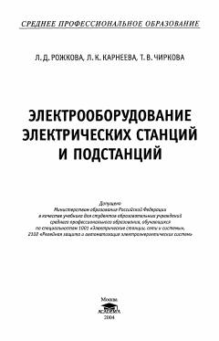

ЭЭElektr stansiyalari va podstansiyalarining elektr jihozlari bo'yicha o'quv qo'llanma.
Ushbu darslik elektr stansiyalari va podstansiyalarning asosiy elektr jihozlari, jumladan generatorlar va transformatorlar haqida batafsil ma'lumot beradi. Kitobda qisqa tutashuv toklarini hisoblash usullari, elektr tarmoqlarining ishlash rejimlari va taqsimlash qurilmalarining konstruksiyalari yoritilgan. O'quv qo'llanma o'rta maxsus ta'lim muassasalari talabalari uchun mo'ljallangan.